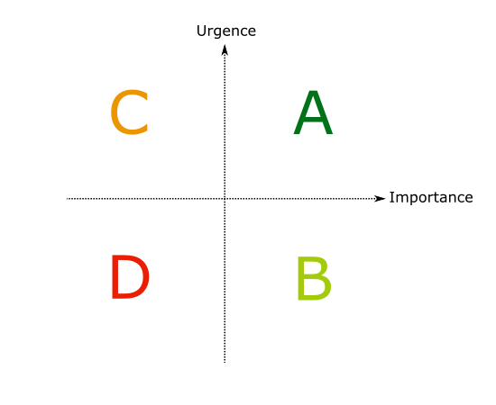

PO non certifié
Spécifier agile sans connaître l'agilité
Mon expérience
- Mise en place de l'agile (expérimentations et industrialisation)
- Surtout des petits projets
- Des utilisateurs peu projet et pas du tout agile
- Du métier très spécifique mais simple
Premier jet de backlog
Pas de gestion complexe des priorités

Quelle fonctionnalité choisit-on de faire si on devait arrêter le projet demain ?
Affiner la spec
En particulier, si l'utilisateur semble mettre plus de priorité que pressenti